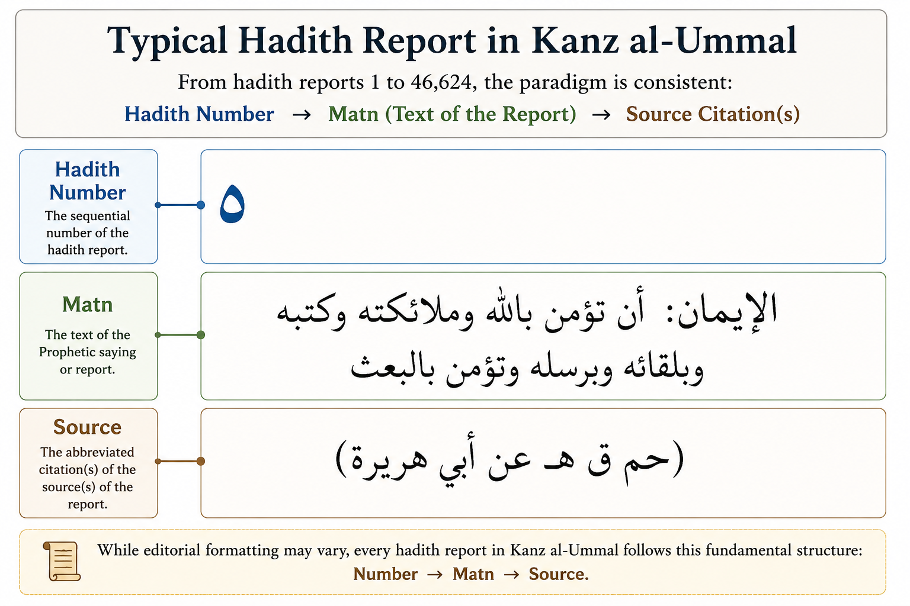

| Measure | Value |
|---|---|
| Expected hadith numbering range | 1–46,624 |
| Observed hadith starts in source | 44,092 |
| Missing numbers checked | 2,582 |
| Missing numbers present as literal hadith starts | 0 |
| Missing numbers absent as literal hadith starts | 2,582 |
| Consecutive missing-number ranges | 159 |
| Likely local source misnumberings | 7 |
| Source numbering gaps | 152 |
| Duplicate-number rows inspected | 0 |
Computational Corpus
1 Computational Corpus
1.1 Overview
The canonical computational corpus is maintained in a DuckDB database. DuckDB stores the parsed hadith corpus together with audit tables, intermediate products, and downstream analytical results. This architecture provides a reproducible workflow from the original digital source files to the statistical analyses presented later in this report.
The principal analytical table is:
kanz_hadith_reports
Conceptually, each record contains three components:
- Hadith number
- Matn (text)
- Source citations

Although this structure appears straightforward, several characteristics of the Shamela digitalization complicate automatic corpus construction.
1.2 Audit-Driven Corpus Construction
Rather than relying on a single parsing pass, the project adopts an audit-driven approach. Independent quality-control procedures are used to identify ambiguous records before they enter the canonical corpus.
This philosophy favors conservative extraction over aggressive automation. When uncertainty exists, the record is retained for later review rather than forcing an automatic decision.
1.3 Example 1 — Hadith Numbering
The printed edition does not contain a perfectly continuous sequence of hadith numbers. During development, a dedicated audit compared the extracted numbering with the original source text to distinguish genuine numbering irregularities from parser failures.
The primary purpose of this audit was validation rather than correction. It demonstrated that numbering anomalies are properties of the source edition itself and therefore should not automatically be interpreted as parser errors.
Future versions of the corpus are expected to rely primarily on a manually curated numbering table, making the detailed audit outputs largely historical.
1.4 Hadith Numbering Audit
During corpus construction, the hadith numbering sequence was audited against the source text. The purpose of this audit was not to produce a final corrected edition, but to determine whether apparent gaps and anomalies were parser artifacts or features already present in the source edition.
The audit reads the CSV outputs stored under:
numbering_audit_dir <- file.path(
"kanz_outputs",
"02a_missing_hadith_number_audit"
)The numbering audit demonstrates that apparent gaps in the hadith sequence are not simply parser failures. Missing report numbers were checked directly against the source text, and the audit distinguishes numbers that are literally absent from the source from those requiring further review.
For the purposes of this Version 1.0 report, the detailed gap structure is less important than the general conclusion: the parser cannot assume a perfectly continuous sequence from 1 to 46,624. Numbering irregularities must be explicitly audited and, eventually, resolved through a curated reference table.
NoteInterpretation
The numbering audit is primarily a validation layer. It documents that some numbering irregularities originate in the source edition itself and should not be treated automatically as extraction failures.
In later versions of the project, this audit can be reduced or replaced once a curated hadith number table exists.
1.5 Example 2 — Separating the Matn from Source Citations
A more substantial challenge concerns identification of the boundary between the matn and the abbreviated source citations.
Although most reports follow the general pattern
hadith number → matn → source citations
the editorial conventions used to indicate this transition are not completely standardized. Source citations may appear parenthetically, within quotation marks, or as bare abbreviations embedded directly in the running text. No single parsing rule correctly identifies every transition.
Accordingly, the Version 1.0 parser adopts a conservative strategy. When the boundary cannot be determined confidently, potentially ambiguous material is preserved for subsequent scholarly review rather than being split automatically.
1.6 Source Citation Audit
A second audit examined the abbreviated source citations that follow the matn. Unlike the hadith numbering audit, this stage focuses on the transition between the text of the report and the bibliographic information identifying its original sources.
The audit summarizes recognized source abbreviations, narrator extraction, unresolved source tokens, and report-level parsing decisions. Together these provide an overall assessment of the reliability of source identification in the current Version 1.0 corpus.
| Measure | Value |
|---|---|
| Recognized source abbreviations | 36 |
| Distinct source abbreviations observed | 33 |
| Unknown source-review tokens | 1182 |
| Distinct narrators extracted | 4283 |
| Reports containing source abbreviations | 46,623 |
| Hadith/source matrix rows | 46,623 |
The audit demonstrates that most source citations can be recognized using a controlled lookup table of standard abbreviations. Nevertheless, the printed edition does not employ a completely uniform editorial style, and some reports contain abbreviated forms or formatting patterns that cannot yet be classified automatically.
Rather than forcing uncertain classifications, the parser records these unresolved cases for subsequent scholarly review. This conservative strategy preserves the integrity of the corpus while simultaneously identifying the specific records that would benefit most from manual curation.
ImportantA Curated Source Table
The greatest remaining opportunity for improving the computational corpus is the creation of a manually curated hadith number → matn → source reference table.
Such a resource would establish definitive boundaries between the text of each hadith and its accompanying source citations. Once available, it would immediately improve lexical analyses, repeated phrase discovery, narrator extraction, source attribution, transmission-network reconstruction, stylometric studies, and virtually every downstream computational linguistic analysis.
The present audit framework is designed to facilitate that process by identifying precisely those records requiring scholarly review rather than attempting increasingly complex parsing heuristics.
1.7 Why Corpus Refinement Matters
ImportantCollaborative Corpus Curation
The principal remaining challenge is no longer demonstrating that large-scale computational analysis of Kanz al-Ummāl is feasible. Version 1.0 establishes that proof of concept.
The next stage of the project is the creation of a carefully curated hadith number → matn → source reference table.
Such a curated table would immediately improve every downstream analysis, including lexical statistics, repeated phrase discovery, source abbreviation analysis, narrator extraction, stylometric studies, transmission-network analysis, and future computational linguistics research.
For this reason, scholarly corpus curation is expected to provide substantially greater long-term benefit than continued refinement of individual parsing heuristics.
1.8 Transition to Corpus Analysis
Despite the remaining areas requiring curation, the current Version 1.0 corpus already supports meaningful quantitative investigation. The following chapters present three examples of corpus-wide analyses generated directly from the current DuckDB corpus: descriptive statistics of the matn, empirical discovery of repeated phrases, and analysis of source abbreviations and narrator information.